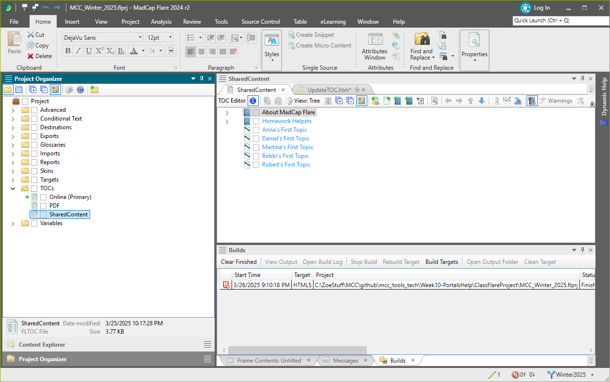
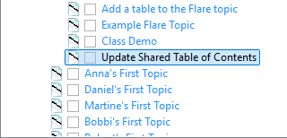
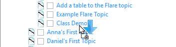
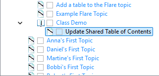

If you decide to do more than update the topic I created for you, you will need to add the new files to the Shared Table of Contents.
By editing the shared table of contents, both the PDF and the Online output are automatically updated. This way you don't have to maintain both table of contents.
Switch to the Project Organizer.
Expand the TOCs folder
Double-click SharedContent to open the TOC.

You may need to expand a section.
Switch to the Content Explorer.
Select the topic you want to add and drag it to the TOC.
Watch the arrow to place your topic in the correct location.
|
Insert topic as sibling (same level)
|
Result:  |
|
Insert topic as child (level below)
 |
Result:  |